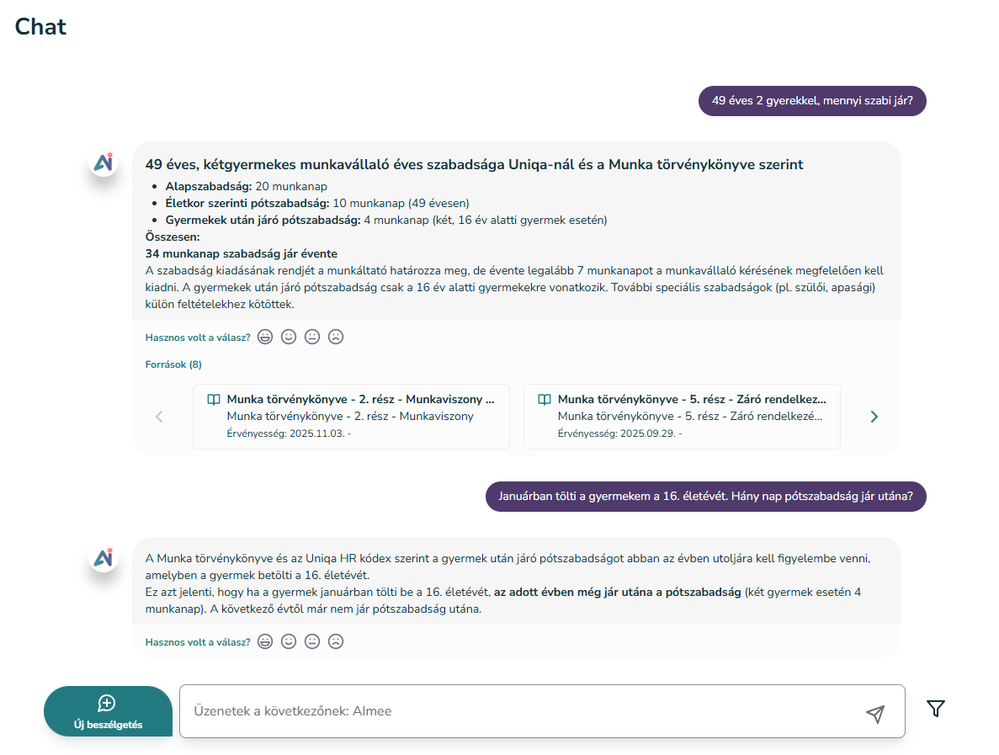
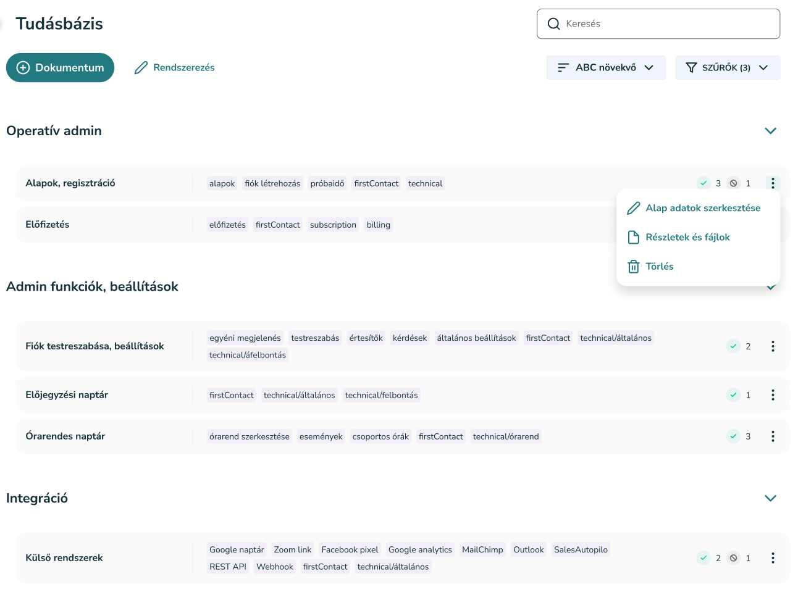

Aimee AI‑alapú chat‑megoldása egységesíti és automatizálja a vállalati ügyfélkommunikációt – pontos válaszokat ad, 0–24 órában.
A beérkező kérdések megválaszolása sok időt vesz igénybe, különösen, ha ismétlődő vagy egyszerű információk iránt érdeklődnek az ügyfelek.
Az eltérő ügyintézői stílus, tudásszint vagy rendelkezésre állás miatt a válaszok nem mindig egységesek.
A vállalati információk több rendszerben és dokumentumban szétszórtan találhatók, ami megnehezíti a pontos és gyors válaszadást.
Az ügyfelek elvárják, hogy bármikor választ kapjanak – az emberi ügyintézők viszont nem állnak rendelkezésre folyamatosan.
Az Aimee chat asszisztens non-stop elérhetőséget, azonnali válaszokat és következetes minőséget biztosít minden ügyfélnek. Struktúrált, jól kereshető tudásbázisának köszönhetően 90% feletti válaszadási pontossággal dolgozik.
Elemzi a felhasználói kérdéseket, felismeri a szándékot, témát és a kontextust. A válaszokat egy előzetesen felépített, strukturált tudásbázisból és ha szükséges a háttérrendszerekből állítja össze. Megőrzi a beszélgetés logikai folytonosságát, így többkörös kérdésekben is konzisztensen reagál.

Az Aimee működésének középpontjában egy strukturált, jól kereshető és könnyen karbantartható tudásbázis áll. Ez biztosítja, hogy minden válaszát pontos, ellenőrzött és naprakész információkra építve adja meg.
A tudásbázist nemcsak a chat, hanem az email‑modul is használja, így az ügyfél minden csatornán egységes és megbízható válaszokat kap.

Minden, ahol az ügyfelek gyors, pontos válaszokat várnak és fontos a folyamatos elérhetőség.
Példák különböző területekről: